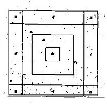

Classic Treatis 古典基本論 ..
（３）競技ライン
囲碁 将棋 チェスなどのゲームは、専用のマス目の入った盤をもちいる。駒や碁石は、そのマスに従っておかれる。麻雀でもテーブルは必要であるが、手牌 捨て牌 副露牌などは いちおう置くべき場所が決まっている。そこで専用のラインまでは必要ない。しかし置くべき場所とはいっても、むかしはいろいろあった。たとえばもともとの中国麻雀では、副露牌は手牌の前方に副露していた。現在でも古典手法の中国麻雀では、手牌の前方に副露している。そこで手牌の前方に副露牌が無ければ、門前清（メンぜんチン＝手配の門前が清い）となる。しかし日本では、各プレーヤーの横に副露するようになった。いや、右でも左でも手牌の横に副露するならまだいい。しかし中には手牌と同列に並べることさえあった（もちろんチーポンした牌は、相手側に向けて）。それはいくら何でも不正がしやすいし、世の中は右利きがほとんど。そこで自然に右側に副露するのが大勢となったが、左側に副露することも行われていた。しかし右側、左側が入り交じると、ものすごくやりにくい。そこでたとえ左利きでも右側に副露する。※昭和42、3年頃、「オレは左利きだから」と 左側に副露していた人に一度だけあったことがある。そのメンツの中では年長のベテラン。あとは若僧ばかりだったので何も言えなかった。しかしその人が下家になってチーポンすると、ものすごくやりにくかった。(ノд｀)
捨て牌にしても、現在は６枚切りが主流で行われている。10枚15枚と延々と横へ捨て続ける人はいない。しかしむかしは、一列10枚15枚は平気の平左。最後の17,8枚まで一列に捨て続けられることがいくらでもあった。そんな風潮の中で提唱されたのが、この競技ラインの提唱。月刊「麻雀」（林茂光麻雀研究所刊 昭和７年２月号 P49）に掲載されたものであるが、現在でも、一読の価値がある。
※タイトルに「スポーツ麻雀」とは、“賭けない健全なスポーツ的麻雀”という主旨での呼称。
スポーツ麻雀にほしい「競技ライン」 東京 山本武夫
「麻雀」十二月號に掲載の林茂光先生草案の「日本麻雀審判規定」並びに「日本麻雀正打法式規定」を拝讀して、小生は双手を擧げて欣喜置くあたわざる所です。久しきにわたって該規定の出現を心待ちにして居った次第ですが、今回 林茂光先生の御健惱に依り、申し分なき名規を立案下されたことは、大いに敬意を表してやみません。扨て小生は以前より卓子に「競技ライン」を備ふることを立案致して居ったのですが、之を機會として茲に發表させて頂きます。併せて先生の御批評を乞ひ度いと希望して居ります。勿論完全なものでは毛頭ありませんが、いささかなりとも採り得る點を御見出しになり、一層完璧なるものを御創案願へれば幸甚此の上もない次第です。＊ ＊ ＊ ＊ ＊ ＊ ＊ ＊ ＊卓子は通常白布を以て被はれて居るので、白布に斯くの如き黒きラインを付ける。イ．手牌ライン
配牌と同時に各手牌は此のライン中へ打ち立てる。よく河中程へ突き出して卓を我物顔に立てたり、横柄に並べたりするのは見苦しく且つ倒されたりその他問題が起こり易い。ロ．副露ライン
副露牌は此の中に置く。副露牌を手牌と同一に並べるのは不正手段を行ひ易い。尚 河へ混入したり、城壁の中に入ったりする心配がない。ハ．井圏
各自 必ず此のラインの中に砌牌する。ニ．河
之に依り河の境界線を判明にし、手牌と井圏と河を一層判別明瞭ならしめる。ホ．打牌ライン
各自の打牌は一度此のラインの中へ置き、後に河の中に入れる。打牌するとき兵牌のそばに置くと、自摸に依る和牌であるか、河に打出すべきものであるかに迷ひ、それがため此茲で不正手段に出づる者が往々にしてある。尚 栄和のとき和牌は手牌ラインの中へ公開する。林茂光附記
「競技ライン設定」については、嘗て織田収君、川村老人の両氏も話されていたが、貴下程詳しくて要領を得ていなかった。正打法式を確定する上には、是非ここ迄行かなければならない。即ちもっと嚴格にすれば、牌、卓子迄も寸法を定めなければならなくなるが、それは到底實行出来ないから、この位の程度でよいでせう。